Esculpiendo
el futuro de la
Pedagogía
a través de la
Tecnología
Consultoría estratégica e ingeniería digital para instituciones educativas. Transformamos la complejidad algorítmica en herramientas con sentido humano.
Conocé nuestras propuestas
En una era donde todo cambia vertiginosamente,
solo queda apostar a lo que permanece:
el ser humano.
Planificación Consciente con IA
Potenciá tus planificaciones mediadas por inteligencia artificial sin perder el eje pedagógico.
Material Didáctico 100% Personalizado
Aprendé a crear recursos y contenidos adaptados específicamente a las necesidades reales de tu aula.
Abordaje Crítico y Actual
Respuestas y estrategias directas ante la problemática del uso de la IA en los procesos de aprendizaje contemporáneos.
Innovación con sentido
Consultoría Estratégica Educativa
Auditoría integral de procesos de aprendizaje, implementación crítica de Inteligencia Artificial en el aula y desarrollo estratégico de planes institucionales a medida.
- Auditoría de flujos pedagógicos
- Adopción ética de IA
Ingeniería Digital Pedagógica
Desarrollo técnico de plataformas educativas, automatización consciente de tareas administrativas y curaduría de herramientas tecnológicas avanzadas.
- Automatización de tareas
- Plataformas a medida
Tutorías Individuales
Acompañamiento uno a uno para docentes y profesionales que buscan dominar herramientas de Inteligencia Artificial aplicadas a la creación de sus propios proyectos.
- Mentoría 1 a 1
- Proyectos reales
Propuestas formativas
¿No encontrás lo que buscás? Diseñemos juntos una propuesta a tu medida
La intersección entre pedagogía y técnica.
Combinamos más de 15 años de trayectoria en las aulas, la gestión pública y el desarrollo tecnológico. Diseñamos e implementamos propuestas formativas, guiones educativos oficiales aprobados con puntaje docente y talleres de innovación orientados a estudiantes de todos los niveles y modalidades del sistema educativo.
Nuestro equipo reúne experiencia en coordinación de educación digital, capacitación de formadores, docencia universitaria y abordajes terapéuticos en educación especial. Integramos la gestión de programas de conectividad con la formación en programación, robótica, modelado 3D, producción audiovisual e Inteligencia Artificial accesible, impulsando una incorporación crítica de la tecnología aplicada al fortalecimiento de los procesos de enseñanza.

La práctica como validador pedagógico.
IA, tu nueva pareja pedagógica
Escuela Especial Asociación Manuel Belgrano
El Portal del Sol
Diseño e implementación de una capacitación intensiva sobre el uso estratégico y responsable de la Inteligencia Artificial en el aula, adaptada a las necesidades específicas de la Educación Especial. A través de la integración práctica de modelos de lenguaje avanzados (LLMs) y sistemas de recuperación de información (RAG), los docentes aprendieron a diseñar asistentes virtuales personalizados capaces de generar planificaciones, secuencias didácticas y proyectos de inclusión. El foco principal del taller estuvo en la validación pedagógica: lograr que la tecnología responda de forma segura, fiel y estrictamente alineada a los documentos y diseños curriculares oficiales del sistema educativo.
Llevá la innovación pedagógica a tu institución.
Diseñamos capacitaciones a medida, consultorías técnicas y talleres prácticos adaptados a la realidad de tu equipo docente y tus estudiantes.